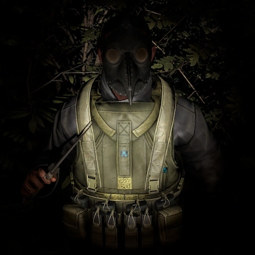

Cultists
Cultists are a faction and a type of Bosses in Escape from Tarkov.
Notes
- Cultist's footsteps make absolutely no noise.
- Cultists are cold blooded and can hardly be spotted with thermal vision devices.
- Killing Cultists as a Scav does not carry any penalties towards your Scav karma.
- The cultist priest and his 2-4 followers have different health values than PMCs and Scavs.
Locations
Cultists appear between 22:00 and 7:00. They can be found on the following locations:
Factory - Spawn change 2%
Cultist priest with 2 warriors: Due to the small size of the location they have to be expected everywhere.
Customs - Spawn change 10%
Cultist priest with 4 warriors: At the Scav base (ZB-013 extraction) building with the numerous mounted weapons.
Woods - Spawn change 12%
Cultist priest with 4 warriors: Near their ritual places, which are located western of the sawmill as well as at the dilapidated village in the north.
Shoreline - Spawn change 10%
Cultist priest with 3 warriors: At the health resort or North-east of the swamp village.
Behavior
Cultists lurk in the shadows in groups of 3-5, waiting for a player to approach. They silently approach their enemies and stab them using either normal knives or, in case of the priests, the poisoned Cultist knife. If fired upon, the Cultists will return fire using firearms and grenades. After they attack a player with their knife, they may choose to run off into the woods again and attempt to attack the player(s) from the shadows once again. Some Cultists have been seen to prone in the grass or hide in bushes while their companions engage the player(s) with weapons, then attack with their knives when it's least expected.
As the Cultists prefer to ambush players and are extremely well hidden, they almost always have the initiative. Thus, it is important for players to quickly determine exactly where the Cultists are and attempt to regain the initiative. Cultists appear to always have suppressors and stick to cover, so players must be able to quickly spot them in the trees, especially at night.
Cultist's Knife